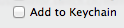

Lab 14, Part 2 - Remote
Overview
- connect to a remote server
- run commands on remote server
- upload files to remote server
Instructions
Create Four Text Files
- using SublimeText, create the following files in your repository folder (~/Desktop/yourname/lab-14-remote):
- one.txt
- two.txt
- three.txt
- proof.txt
- in one.txt, type in, without quotes: “uploaded with scp”
- in two.txt, type in, without quotes: “uploaded with commandline sftp client”
- in three.txt, type in, without quotes: “uploaded with graphical sftp client”
- in proof.txt, type in, without quotes: “Directory Listing on Remote Server”
- use git to check the status, add to staging, and commit … don’t forget the -m ‘message’ part (don’t worry about using git push until the end)
Running Commands on a Remote Server
- open terminal
- use ssh to connect to a remote server using your username and foureyes.in as the host
ssh yourusername@foureyes.in
- you’ll be asked for a password… and once you’re authenticated, you will have a prompt on the remote server
- use ls to list all of the files (there should be none!)
- use mkdir to create a directory called public_html
- chmod 755 public_html
- try running the following commands on the remote server:
- whoami
- who
- type CONTROL+D to log out
Using scp to Upload a File
- open a new terminal
- change your directory to your lab directory: ~/Desktop/username/lab-14-remote
- use pwd to make sure that you’re in ~/Desktop/username/lab-14-remote
- use ls to show that all of your text files are present
walsh-9:bzuckerman bree$ ls -l total 8 -rw-r–r– 1 bree staff 4 May 10 08:10 one.txt -rw-r–r– 1 bree staff 0 May 10 08:58 proof.txt -rw-r–r– 1 bree staff 0 May 10 08:58 three.txt -rw-r–r– 1 bree staff 0 May 10 08:58 two.txt * upload one.txt to your remote server using scp
# scp [/path/to/local/file] [remote-username]@[remote-hostname]:[/path/to/remote/file]
scp one.txt yourusername@foureyes.in:~
- in the terminal window that’s logged in to your remote server, type ls to show that the file is present on your remote server
- you should have a single file: one.txt
Use a Commandline SFTP Client to Transfer Files
- switch back to the terminal window that’s local
- use pwd to make sure that you’re in ~/Desktop/username/lab-14-remote; if you’re not, cd into it
- type in sftp with your username@remotehost to start up the commandline sftp client; it will give you a prompt that’s waiting for commands
# sftp [username]@[remote host]
sftp yourusername@foureyes.in
- type in lpwd after the prompt to determine what local directory you’re in
sftp> lpwd
- you should be in lab_11_part_1:
Local working directory: /Users/student/Desktop/yourusername/lab-14-remote
- type in pwd after the prompt to determine what remote directory you’re in
sftp> pwd
- you should get something like
Remote working directory: /root
- use lls to list the files that you have locally
sftp> lls
- you should see your three text files
- use put to upload one of your local files to your remote server
sftp> put two.txt
- you should get feedback similar to the following:
Uploading two.txt to /root/two.txt
two.txt
- in the terminal window that’s logged in to your remote server, type ls to show that the files are present on your remote server
- you should have two files: one.txt and two.txt
Use a Graphical SFTP Client to Transfer Files
- on your local workstation…
- download this SFTP client: http://cyberduck.ch/Cyberduck-4.2.1.zip
- unzip it (it might automatically be extracted for you)
- move the CyberDuck up to the desktop
- double click on it to run it
- click on open connection

- look for the drop down that says FTP

- change it so that it is SFTP

- uncheck add to keychain 
- put in the domain (foureyes.in), username and password
- once you’ve contected, you should see the two files that you’ve already created
- open finder and browse to your lab directory
- drag and drop both three.txt into CyberDuck to upload your file
- in the terminal window that’s logged in to your remote server, type ls to show that the file is present on your remote server
- you should have three files: one.txt, two.txt, three.txt
- in the same terminal window, type in hostname
- copy (use your mouse to highlight, command-C) everything from ls through to the output of hostname
- using SublimeText, open proof.txt
- paste your commands and their output
- save your work
- use git to check the status, add to staging, and commit … don’t forget the -m ‘message’ part
- finally, use git push origin master to send to remote repository
On Your Own, Publish Your Site
- using any of the methods above, upload the following files to your public_html folder on the remote server: foureyes.in
- home.html
- about.html
- mystyles.css
- check that it worked by logging in to the server and typing in ls public_html
- finally, in your browser, go to http://foureyes.in/~yourusername/home.html
- substitute yourusername with your system usernam
- first initial, last name, all lowercase